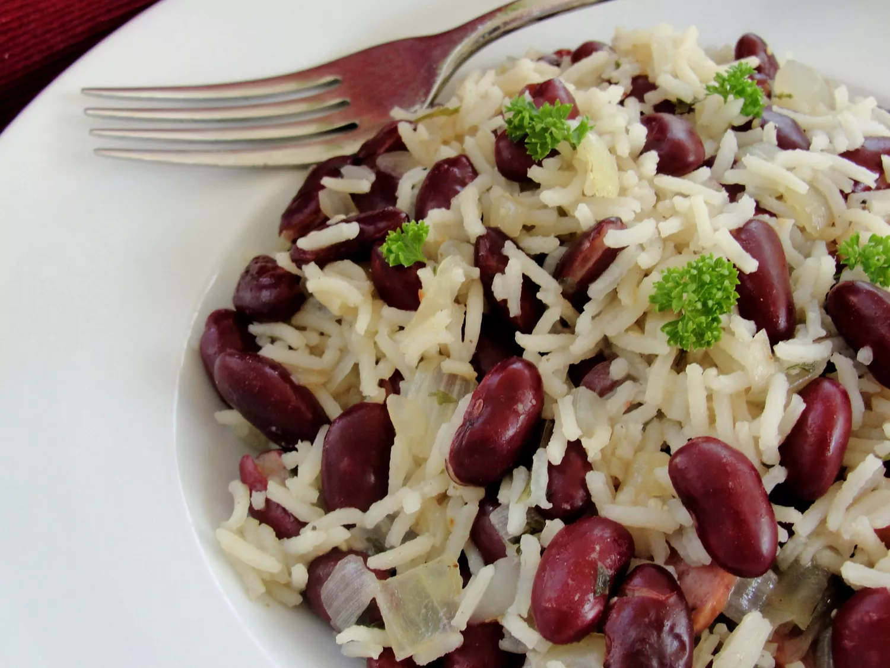

Rice and Beans

Rice & Beans
This recipe for rice and beans is so delicious! I have adapted it from the traditional Haitian style of making rice and beans. The scent and taste of the cloves make the dish! Serve with avocado on the side and you'll want it every night of the week!
Prep Time: 15 mins
Cook Time: 2 hrs
Total Time: 2 hrs 15 mins
Servings: 6
Yield: 6 servings
Ingredients
- 1 (8 ounce) package dry kidney beans
- 4 tablespoons olive oil
- 1 bulb shallot, minced
- 3 cloves garlic, minced
- 1 cup uncooked long grain white rice
- 2 bay leaves
- 1 teaspoon adobo seasoning (Optional)
- 1 tablespoon kosher salt
- freshly ground black pepper to taste
- ¼ teaspoon ground cloves
- 3 sprigs fresh parsley
- 3 sprigs fresh thyme
- 1 scotch bonnet chile pepper
Procedure
- Place beans in a large pot, and cover with 3 inches of water. Bring to a boil, reduce heat, and simmer 1 1/2 hours, or until tender. Drain, reserving liquid.
- Heat oil in a large skillet over medium heat. Saute shallot and garlic until fragrant.
- Stir in cooked beans, and cook for 2 minutes.
- Measure reserved liquid, and add water to equal 5 cups; stir into skillet.
- Stir in the uncooked rice.
- Season with bay leaves, adobo seasoning, salt, pepper, and cloves.
- Place sprigs of parsley and thyme, and scotch bonnet pepper on top, and bring to a boil.
- Reduce heat, cover, and simmer for 18 to 20 minutes.
- Remove thyme, parsley, and scotch bonnet pepper to serve.